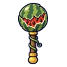

แตงโมกลิ้ง · ร่างเปลือกส้ม
มอนธาตุดิน Lv 5–10
เจอที่
| แมพ | โซน | Lv | ภูมิภาค |
|---|---|---|---|
| ไร่แตงโมใต้จันทร์ | 5–10 | ป่ากองไฟ |
ค่าสถานะตามเลเวล
| Lv | HP | ATK | DEF | MDEF | EXP | Job |
|---|---|---|---|---|---|---|
| 5 | 1,100 | 20–29 | 2 | 1 | 26 | 20 |
| 7 | 1,376 | 25–37 | 3 | 1 | 31 | 23 |
| 10 | 1,867 | 32–48 | 4 | 2 | 37 | 28 |
ตีด้วยธาตุไหนดี
แรงขึ้น: ไฟ ×1.5 พิษ ×1.25
เบาลง: ลม ×0.5 ดิน ×0.25
วัตถุดิบที่ดรอป
| ของ | โอกาส | |
|---|---|---|
| เปลือกแตงโมแข็ง | 82% | 1 ชิ้น (15% ได้ 2) |
อุปกรณ์ที่ดรอป (1)
| ของ | โอกาส |
|---|---|
 กระบองแตงโมกลิ้ง | 0.5% |
สกิล
กระโจน (Lv 25+) · กระโจน (Lv 60+) · หอนเรียกฝูง (Lv 60+)